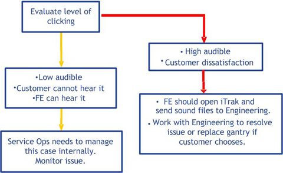

Proprietary to General Electric
Direction 5307452-8EN, Rev# 4
Discovery CT750 HD Service Methods - Adv
Proprietary to General Electric |
| Last revised: | August 19, 2008 |
This document summarizes the Molecular Imaging and Computed Tomography Hardware Team suggestions for investigating unusual gantry noises. It is expected that the field engineer will have worked with the Online Center before writing an iTrak about an unknown noise. The Online Center may have additional suggestions for proper troubleshooting. This document is not under revision control. It is only a guide.
| CRUSH HAZARD. | |
| GANTRY ROTATION WITH COVERS REMOVED CAN CAUSE SERIOUS INJURY. | |
| Keep all body parts or loose items away from gantry during noise investigation when axial drive is enabled. |
Check for a damaged holding brake, which can create either a high pitched squealing noise or a grinding noise. Perform the Axial Drive Holding Brake Replacement procedure and inspect brake for damage. If noise disappears, replace holding brake with new holding brake. If noise does not change, reinstall holding brake and proceed to next step.
The bearing or rubber gear teeth may be damaged and causing noise. Check the axial encoder wheel. Remove the encoder (using Axial Encoder Assembly Replacement) and manually rotate the gantry to determine whether noise persists. If noise disappears, replace the encoder with a new encoder. If noise does not change, continue to next step (do not reinstall encoder until after axial drive belt and pulley have been checked).
Contact between home flag and sensor board can create noise. Manually rotate gantry and inspect for contact. Refer to the Home Flag and Sensor Board Assembly Replacement procedure.
Improperly tensioned axial belt can create a variety of noises. Perform the CT Belt Tension Check & Adjustment (ADV) procedure.
Particles embedded in the belt can create noise. Remove belt and manually rotate gantry. This is accomplished by performing the Belt Removal and Installation procedure; however manually rotate gantry before installing belt. If noise disappears during manual rotation, replace belt with a new belt. If noise does not change, reinstall belt and continue to next step.
Rubbing of a receiver with the slip ring will create noise. Perform the Slip Ring Adjustments procedure.
If the brush-block is misaligned the brushes may exhibit unusual wear and may start to cause unusual noises during rotation. Refer to Slip Ring Brush Block Replacement.
The slip ring covers on the backside near the TGPU have a tight tolerance. They may rub against the slip ring during rotation, check and adjust.
Check for harnessing or plastic cable ties behind the slip ring that may be colliding or moving during gantry rotation. Reposition and/or change cable ties to move cables away from rotating components.
Inspect the heater blower assembly on VCT. Verify that no stationary cables can contact the rotating components of gantry.
Inspect the inside of the rear and front gantry covers to verify that there are no cables that can contact the rotating components of gantry. Place your hand on the outside of the front and rear covers when the gantry is rotating and determine if the noise causes physical vibration in the covers.
Inspect for loose components. Reference the Gantry Rotation safety check process.
Inspect for loose internal components inside each rotating component. Refer to the applicable replacement procedure for each part inspected.
Verify that all harnessing is within the rotating envelope. At the DAS/detector, the shape of the backplane DAS plate is usually the rotating envelope. Verify that harnesses cannot exceed that envelope by moving them by hand. Check for harness slack or extra harness length that is not properly restrained.
Inspect gap on Rotek bearings following the Installation Manual Book 1 Chapter 1 section for Bearing Inpsection.
Record gantry rotation using laptop and microphone in a WAV file in Microsoft Windows XP. There are characteristic patterns that will be evident in the sound file when studied by engineering.
Remove gantry covers.
Turn off as many unrelated noise sources as possible. This includes components like the blower/heater, heat exchanger, DAS/detector fans in the gantry.
In Windows XP on a laptop, use the Microsoft Sound Recorder by selecting Start->All Programs->Accessories->Entertainment->Sound Recorder.
To be sure the quality of the recording is adequate, in the Sound Recorder application, select File->Properties.
On that menu, where you see Format Conversion, select All Formats and then select Convert Now.
Choose the following settings:
Name = CD Quality
Format = PCM
Attributes = 48.00 kHz, 16 bit, Mono
| NOTE: | EACH TIME YOU START THE MICROSOFT SOUND RECORDER, YOU WILL NEED TO RESET THESE PARAMETERS, SINCE THE DEFAULT IS A LOWER QUALITY (TO SAVE FILE SPACE). |
Keep the microphone far enough away from the gantry so air movement does not create false noises due to turbulence moving across the diaphragm in the microphone. For example, blowing on the microphone would cause a turbulence noise. Holding the microphone one meter away from the noise is acceptable. Also, if the sound is more distinctive at the back of the gantry, record the sound with the microphone in the back.
Record a couple of speeds, 1.0, 0.5, 0.4, and 0.35 sec/rev (maximum speed depends on the gantry type).
Listen to each audio file to verify there are no overloads. Overloads create unnatural “crackling” or “whooshing” sounds which are not present during the actual recording. Also, during playback of the recordings using Microsoft Sound Recorder, the sound is shown visually with a green graph. If there is any compression applied, the green graph is not shown. This indicates that the file was recorded incorrectly and the settings should be applied per Step 3.
Illustration 1: Troubleshooting Process Flow
